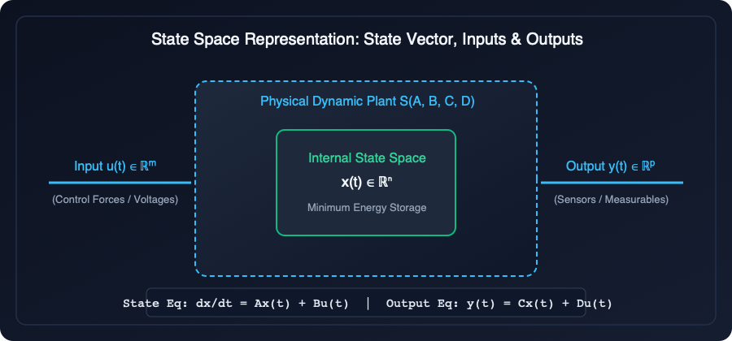

Explain the following state space concepts with appropriate mathematical expressions: (i) State, (ii) State variables, (iii) State vector, and (iv) State space. State Space concepts enthokke aanu? (State, State Variables, State Vector, State Space) എന്തൊക്കെയാണ് State Space അടിസ്ഥാന ആശയങ്ങൾ? (State, State Variables, State Vector, State Space)
State = Minimum set of variables at $t_0$ needed to predict the future behavior of the system.
Ormavekkan: State enn paranjal dynamic system-te memory aanu (energy store cheyyunna $i_L, v_C$ pole). Present state-um input-um arinjaal future motham predict cheyyam.
ഓർത്തു വെക്കാൻ: State എന്നാൽ സിസ്റ്റത്തിന്റെ dynamic memory ആണ് (ഊർജ്ജം സൂക്ഷിക്കുന്ന $i_L, v_C$ പോലെ). നിലവിലെ അവസ്ഥയും ഇൻപുട്ടും അറിഞ്ഞാൽ ഭാവി പൂർണ്ണമായി മുൻകൂട്ടി കണക്കാക്കാം.
Section A Exam-Ready Answer
1. State of a System:
- The state of a dynamic system is defined as the minimal set of variables $\{x_1(t), x_2(t), \dots, x_n(t)\}$ such that the knowledge of these variables at any initial time $t = t_0$, together with the knowledge of input excitation $u(t)$ for all $t \ge t_0$, completely determines the future state and output of the system for any time $t > t_0$.
- It represents the internal dynamic memory of the system.
2. State Variables:
- The individual variables that make up the state are called state variables.
- They are the minimum number of linearly independent variables that represent all independent energy storage elements in the system.
- Examples:
- In electrical systems: Inductor current $i_L(t)$ (magnetic energy) and capacitor voltage $v_C(t)$ (electric energy).
- In mechanical systems: Displacement $y(t)$ (potential energy) and velocity $\dot{y}(t)$ (kinetic energy).
3. State Vector:
- If an $n$-th order system requires $n$ state variables, they are grouped together into an $n \times 1$ column vector called the state vector $\mathbf{x}(t)$: $$\mathbf{x}(t) = \begin{bmatrix} x_1(t) \\ x_2(t) \\ \vdots \\ x_n(t) \end{bmatrix} \in \mathbb{R}^n$$
4. State Space:
- The $n$-dimensional vector space whose coordinate axes are the individual state variables $x_1, x_2, \dots, x_n$ is called the state space.
- At any time instant $t$, the operating condition of the system is represented by a single point called the state point.
- As time progresses, this point moves and traces a continuous curve called the state trajectory.
🌴 Manglish Local Tone Study Guide
- 1. State: Oru dynamic system-te minimum number of variables $\{x_1, x_2, \dots, x_n\}$ aanu state. Time $t_0$-il ee variables-inte value-um, $t \ge t_0$-il kodukkunna input $u(t)$-um arinjaal, future-il system-te ella behaviour-um output-um 100% theerumanikkan pattum.
- 2. State Variables: System-il energy store cheythu vekkunna independent physical elements-inte variables aanu ithu. Electrical circuit-il inductor current $i_L$-um capacitor voltage $v_C$-um; mechanical-il position-um velocity-um.
- 3. State Vector: Ee ella state variables-ineyum koodi oru single column matrix aakki ezhuthiyathaanu state vector: $\mathbf{x}(t) = [x_1, x_2, \dots, x_n]^T \in \mathbb{R}^n$.
- 4. State Space: Ee $n$ state variables coordinate axes aayi varunna $n$-dimensional vector space aanu State Space. Oro samayathum system-te state ee space-il oru single point aayirikkum!
🇮🇳 മലയാളം പ്രാദേശിക പഠന സഹായി
- 1. State (അവസ്ഥ): സിസ്റ്റത്തിന്റെ ഭാവി പ്രതികരണങ്ങൾ കൃത്യമായി മുൻകൂട്ടി കാണാൻ ആവശ്യമായ ഏറ്റവും കുറഞ്ഞ വേരിയബിളുകളുടെ കൂട്ടമാണ് state.
- 2. State Variables: സിസ്റ്റത്തിൽ ഊർജ്ജം സംഭരിച്ചു വെക്കുന്ന ഘടകങ്ങളുടെ വേരിയബിളുകൾ (ഇൻഡക്ടറിലെ കറന്റ് $i_L$, കപ്പാസിറ്ററിലെ വോൾട്ടേജ് $v_C$).
- 3. State Vector: എല്ലാ state variables-നെയും ഒരു കോളത്തിൽ അടുക്കി എഴുതിയ മാട്രിക്സ്: $\mathbf{x}(t) = [x_1, x_2, \dots, x_n]^T$.
- 4. State Space: ഈ വേരിയബിളുകൾ അക്ഷങ്ങളായി വരുന്ന $n$-ഡൈമൻഷണൽ ഗ്രാഫിക്കൽ സ്പേസ്.

Figure: Figure 1.1: Multi-dimensional State Space Representation with Trajectory Vector
Understand It Simply — Intuitive Explanation & Analogy
Think of tracking a cricket ball in flight. If you know its current position $(x, y, z)$ and its velocity $(v_x, v_y, v_z)$ right now, plus gravity and wind, you can predict its entire path. You don't need to know where the bowler was standing 10 minutes ago!
Here, position and velocity are the state variables. Together they form the state vector. The 3D space in which the ball flies is the state space, and the arc traced by the ball is the state trajectory.
Understand It Simply (Manglish) — Local Campus Analogy
Think of tracking a cricket ball in flight. Ee nimisham ball-inte current position $(x, y, z)$-um speed $(v_x, v_y, v_z)$-um namukku ariyaamenkil, pinne kaattum gravity-um koodi nokkiyaal ball engottaanu pokunnath ennu 100% parayan pattum. 5 minute munpu ball evidairunnu ennu nokkenda aavashyame illa!
Ee position-um speed-um aanu state variables. Avaye oru list aakki ezhuthiyathaanu state vector. Athu varayunna graph aanu state space!
ലളിതമായി മനസ്സിലാക്കാം — പ്രാദേശിക ഉദാഹരണം
ക്രിക്കറ്റ് കളിയിൽ ബോൾ എറിയുന്നത് ആലോചിച്ചു നോക്കൂ. ഈ നിമിഷത്തിൽ ബോളിന്റെ സ്ഥാനവും വേഗതയും നമുക്കറിയാമെങ്കിൽ, കാറ്റും ഗുരുത്വാകർഷണവും വെച്ച് അടുത്ത നിമിഷങ്ങളിൽ ബോൾ എവിടെയെത്തും എന്ന് കൃത്യമായി കണക്കാക്കാം. ഈ സ്ഥാനവും വേഗതയുമാണ് state variables!